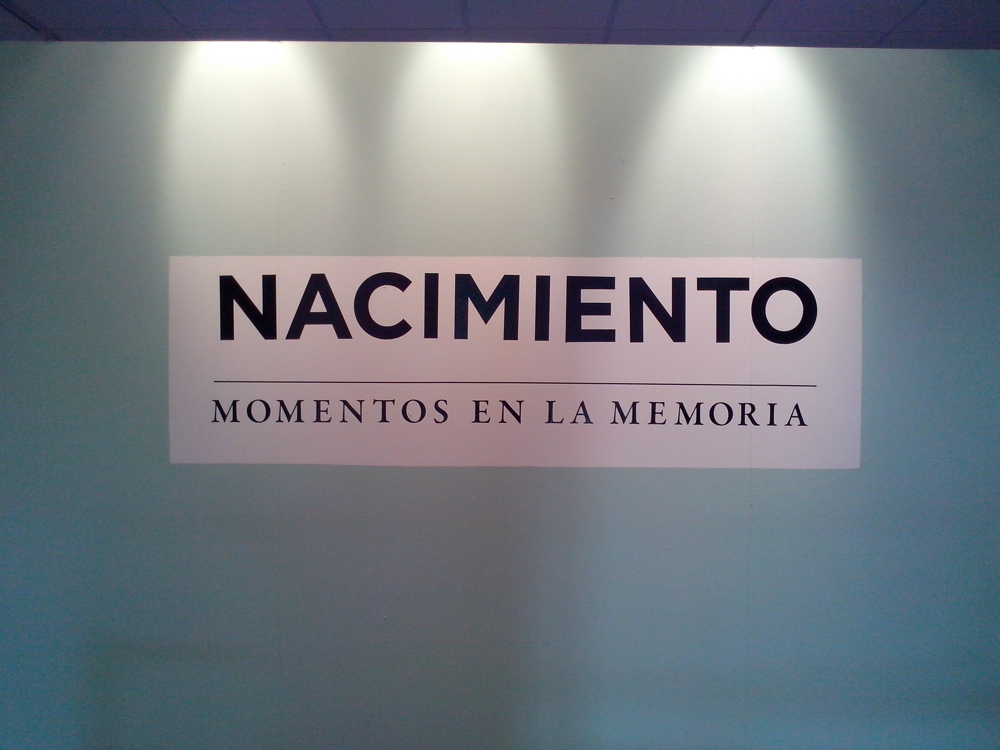
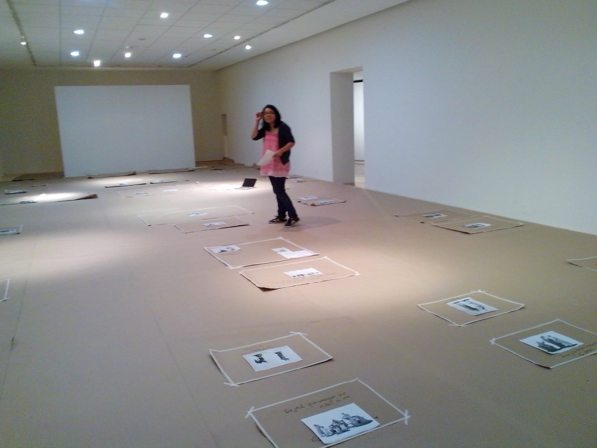
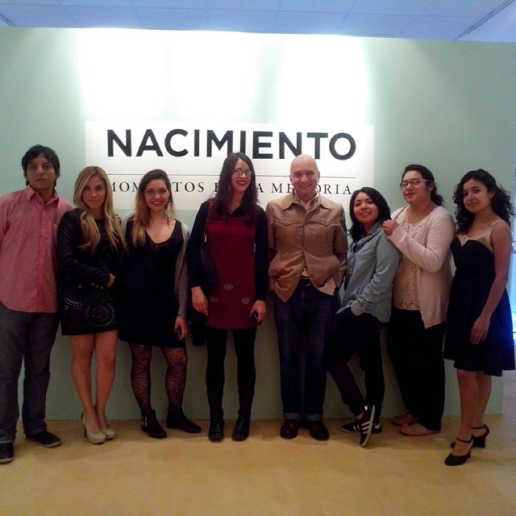
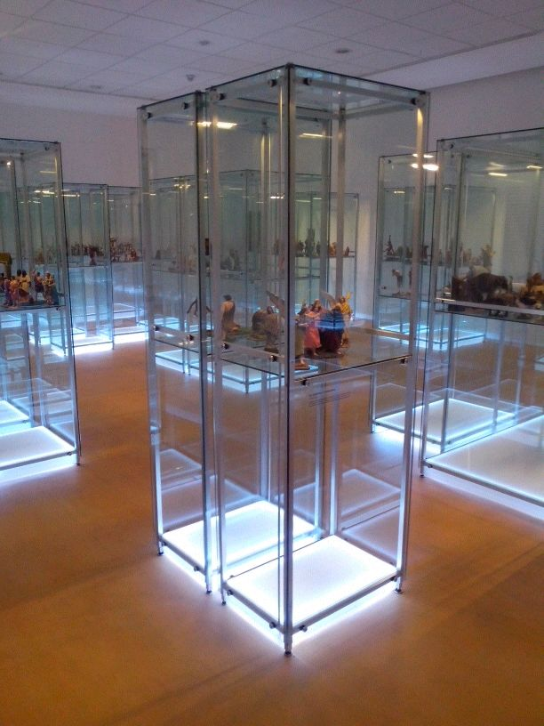
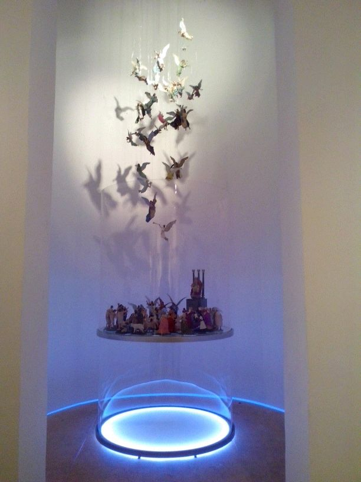
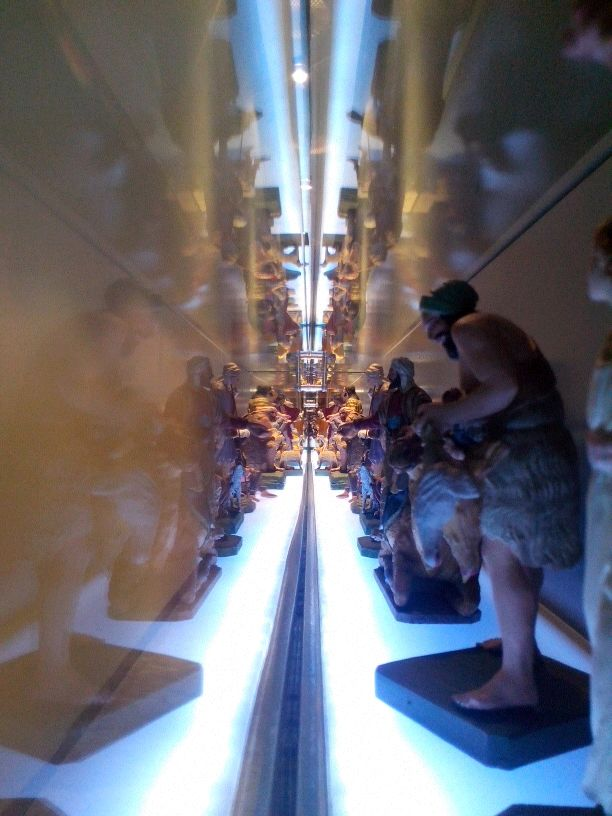
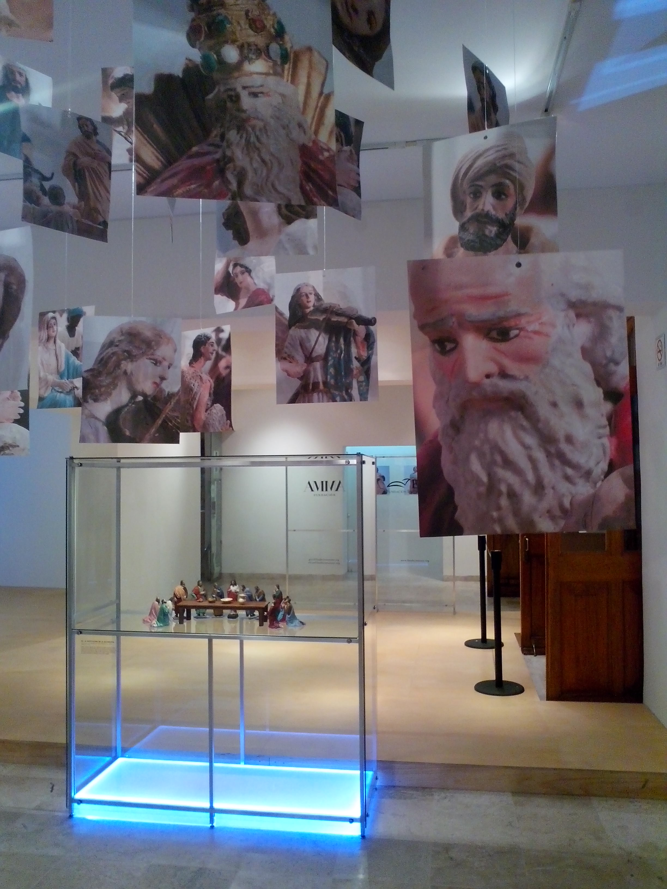
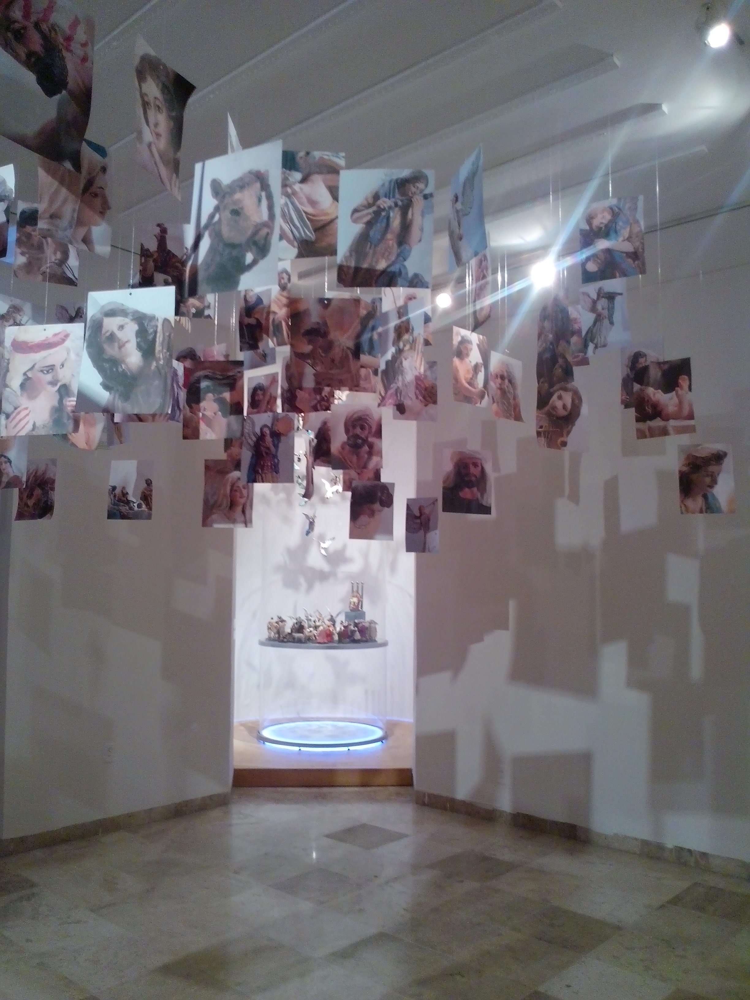
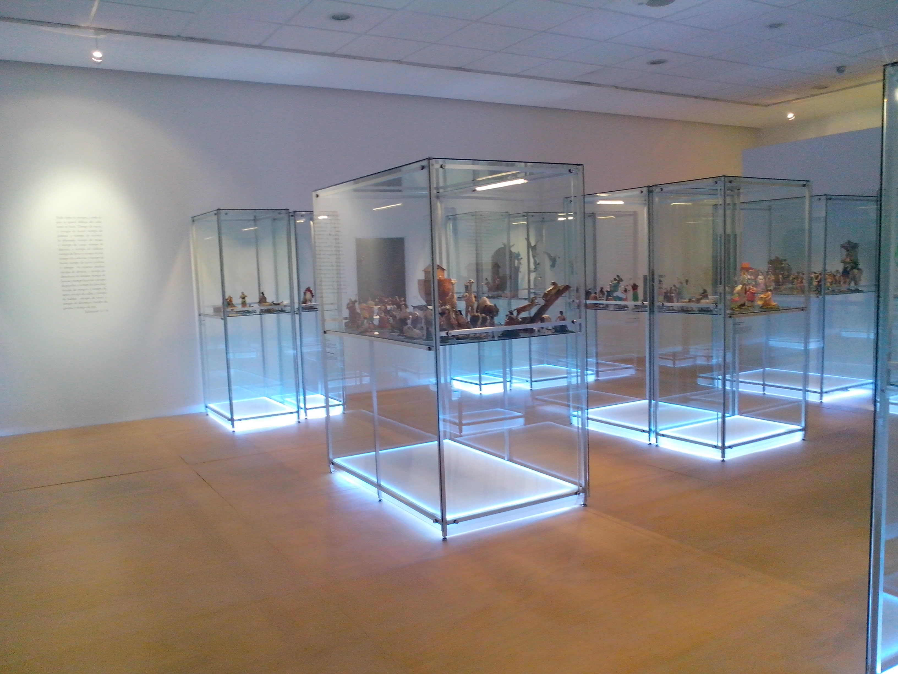
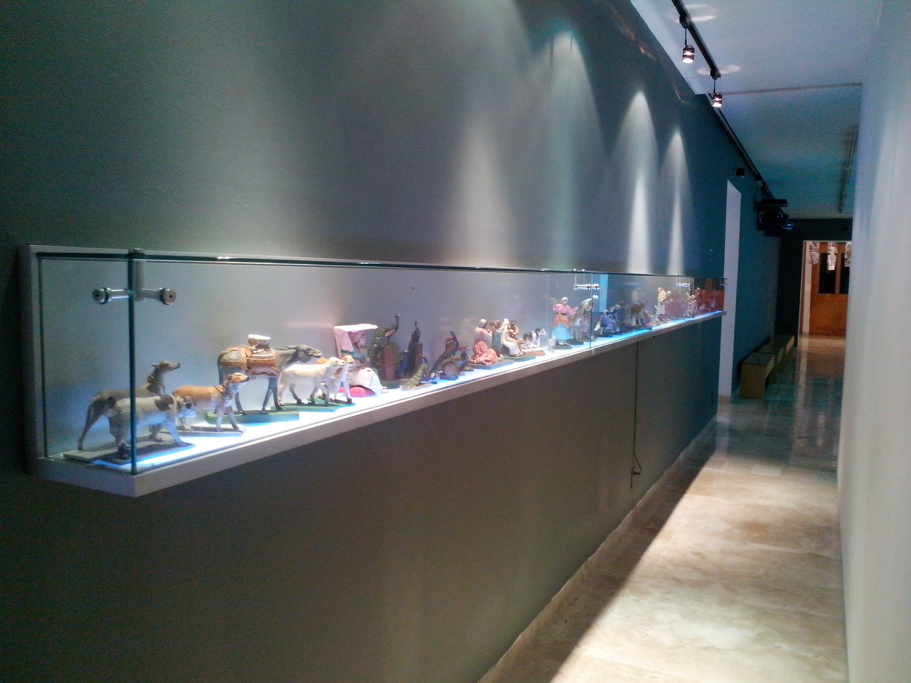

Caso de estudio
Nacimiento
Proyecto curatorial

Descripción breve
Participé en el montaje y producción visual de la exposición Nacimiento, momentos en la memoria, presentada en el Museo Nacional de Culturas Populares. La exposición mostró el "Nacimiento Amparo Espinosa Rugarcía", una colección histórica de 1,100 piezas de barro policromado del artesano Felipe Nieva, integrando una propuesta museográfica contemporánea con una pieza de arte sonoro envolvente.
Desafío
El reto central consistió en la gestión espacial y visual de una colección masiva de 1,100 piezas de formato pequeño, asegurando que la instalación museográfica no solo fuera funcional para una exposición de esta escala, sino que también lograra una lectura contemporánea y coherente. Fue necesario armonizar el valor histórico de la colección con elementos gráficos modernos y una experiencia sensorial (arte sonoro).
Proceso
Mi labor se centró en la ejecución técnica y la coordinación operativa para garantizar la integridad visual del proyecto:
Sembrado y Montaje: Colaboré activamente en el sembrado museográfico, definiendo la disposición espacial de las figuras para optimizar el recorrido y la visibilidad de la colección.
Producción Visual: Participé en la implementación de la gráfica de sala y la producción de materiales visuales de soporte que guiaron la narrativa del recorrido.
Gestión Operativa: Coordiné tareas de producción gráfica y preparación técnica de imágenes, asegurando que cada elemento cumpliera con la calidad e identidad visual establecida.
Colaboración Interdisciplinaria: Trabajé en estrecha colaboración con el equipo de curaduría y el personal del museo para asegurar la cohesión entre el discurso curatorial, los elementos sonoros y la implementación espacial dentro del recinto.
Resultado
Ejecución Técnica: Se logró la instalación exitosa de 1,100 piezas de barro policromado, garantizando su preservación y correcta apreciación estética.
Coherencia Espacial: La implementación de la gráfica de sala y los materiales de soporte resultó en un recorrido fluido que facilitó una lectura contemporánea de una colección del siglo XX.
Habilidades
Galería








